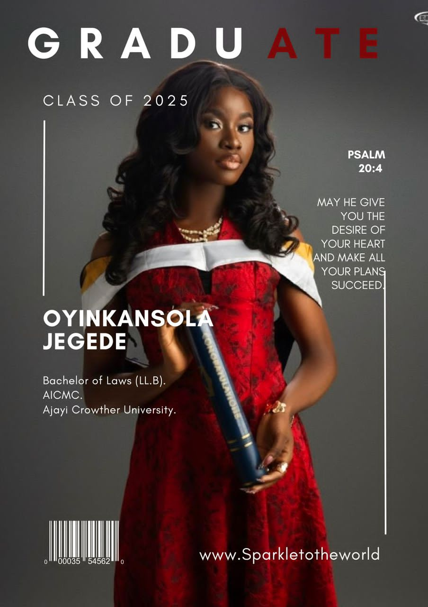

About Me
Versatile Voice Over Artist, Broadcaster, and Aspiring lawyer with a dynamic background in radio, television and content production. Certified journalist and scriptwriter with hands on experience across notable Nigerian media outlet. Adept at show hosting, voice acting, scriptwriting and news presentation. Passionate about storytelling, and creative media production.

Skills
Experience
Education
- Voice Over production
- Radio and Show Hosting
- Scriptwriting and Story Telling
- News Writing and Presentation
- Public Speaking and Debating
- Fluent in English
- Proficient in the use of Microsoft and computer interfaces
- Adobe Audition
- JAN 2025 TILL PRESENT
PODCAST HOST AND PRODUCER “WHAT'S TRENDING” PODCAST
• Creator and host of a podcast that explores pop culture, social issues and trending topics in Nigeria.
• Writes, records, edits and promotes each episode independently.
• Engages audience with relatable takes, guest features and story telling. - JAN 2024 TO JAN 2025
SHOW PRESENTER CROWTHER 88.5FM, OYO, NIGERIA.
• Host of “What's Trending?” - a fast paced current affairs and entertainment show.
• Co-host of “This Is My Take” - a discussion based talk show.
• Voice over artist for station promos, show intros and commercials.
• Writes and presents news bulletins. - JULY 2023
INTERN, CITY FM 105.1, IKEJA, LAGOS, NIGERIA.
• Joined the production unit and handled several voice overs for commercial purposes.
• Prepared and ran a weekly show segment titled “Tweet Trend” on city breakfast.
• Became a weekly member of a show titled “Bimbo and The Gang” on the rundown.
• Assisted in the production of daily news recording. - JULY 2022
CONTENT WRITER AND INTERN, MAX FM 102.3, KETU, LAGOS, NIGERIA
• Daily content creator and writer for the broadcasting station
• Brainstorm new ideas to be aired of radio
• Handled several contents to be aired on numerous segments of the daily show
• Prepared guests and helped in scheduling daily activities to be aired on the show, - SEPTEMBER, 2021
LEGAL INTERN, OSAHAN OHUOBA AND CO, NIPOST BUILDING, OBALENDE, LAGOS.
• Preparing correspondence and typing and modifying documents
• Assisting with cases and working with criminal defense and personal injury cases
• Legal research and writing
• Client intake and maintaining files
• Additional administrative responsibilities include answering phones, personal assistant work and running small office errands - OCTOBER, 2021
JOURNALIST/REPORTER, APEX NETWORK, AJAYI CROWTHER UNIVERSITY, OYO, NIGERIA.
• Researching articles for projects
• Writing, editing and proofreading
• Attending events as directed by the head of Apex Network
• Verifying statements and facts
• Interviewing sources - AUG 2019
INTERNSHIP PROGRAM, TVC COMMUNICATIONS, KETU, LAGOS, NIGERIA.
• Assisted the producer of e-splash (entertainment splash) Mrs. Chichi Okolahum in activities related to the show.
• Fundamental training on script writing and good communication skills.
Daily script writing with my intern partner for the period of internship.
- JAN 2021 - JAN 2025
LAW STUDENT, AJAYI CROWTHER UNIVERSITY, OYO, NIGERIA.
• Member of the law student's senate members, I represent my level in decisions relating to well-being.
• Active member of the moot and mock competitions done in the university
• Top lead in presentations and debates.
• Member of the Independent electoral committee in the faculty. - JULY 2024 - JULY 2024
PRESENTATION, NATIONAL BROADCAST ACADEMY, IKEJA, LAGOS.
• Completed a six weeks course on Broadcasting.
• Certified Broadcaster. - JULY 2021 - SEP 2021
JOURNALISM, NATIONAL BROADCAST ACADEMY, IKEJA, LAGOS.
• Completed a nine weeks course on journalism.
• Certified Journalist. -
FEB 2024
JOURNALISM, NATIONAL BROADCAST ACADEMY, IKEJA, LAGOS.
• Completed a nine weeks course on journalism.
• Certified Journalist. -
FEB 2018/2019 TO DEC 2019/2020
SECONDARY SCHOOL EDUCATION, ALPHA CHOICE INNOVATIVE ACADEMY
• Elected as the Program Director where I handled events and programs of the school.
• Won several certificates and awards for outstanding performance in debates and presentations.
• Graduated top of my class with several distinctions and credit in both school mock exams and the 5West African Senior School Certificate Examination.